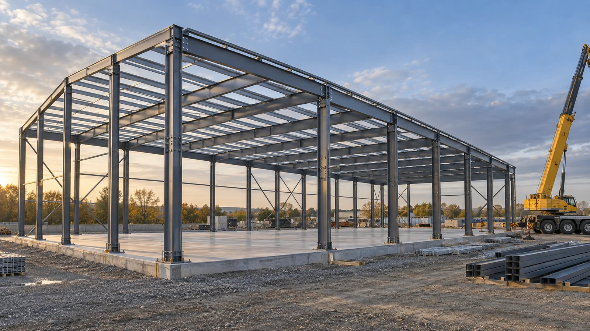

Steel Structure
Practical experience in steel building erection.
Steel structure construction and building erection, supported by Jithu Mohan's experience working with steel buildings and coordinating construction activities.

Steel Buildings
From structural assembly to site coordination.
SJ offers steel building erection and construction coordination for steel structure projects. We work with clients and project teams to define the erection scope, organize site activities and coordinate the work with other trades.
Jithu brings experience in erecting steel buildings alongside his mechanical engineering background and construction delivery experience.
How we support your project
✓
Steel building erection
Assembly and erection of steel building structures to suit the agreed project scope.
Assembly and erection of steel building structures to suit the agreed project scope.
✓
Construction coordination
Coordination of erection activities, site access and interfaces with other trades.
Coordination of erection activities, site access and interfaces with other trades.
✓
Project planning
Review of scope, sequencing and delivery requirements with the project team.
Review of scope, sequencing and delivery requirements with the project team.
Planning a steel building?
Share your drawings, location and erection requirements so we can discuss the scope and next steps.